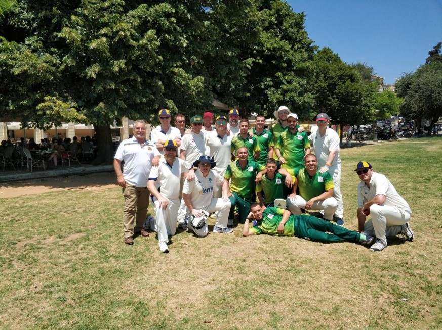
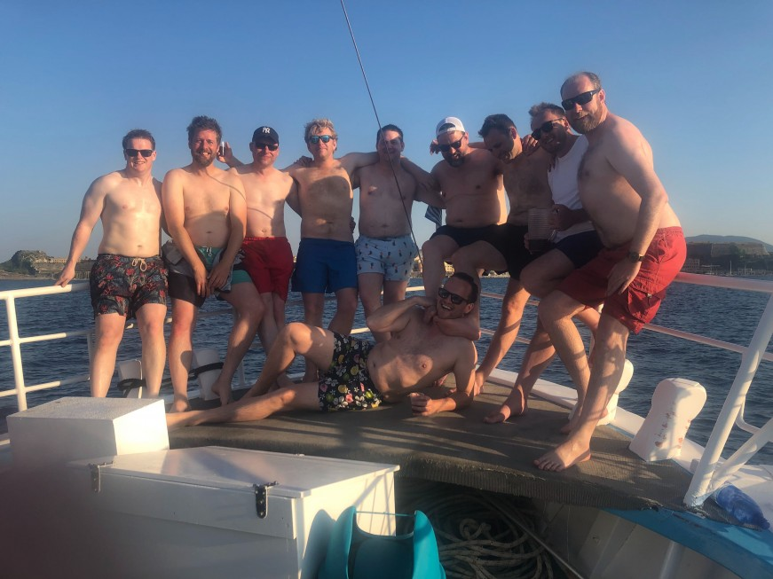
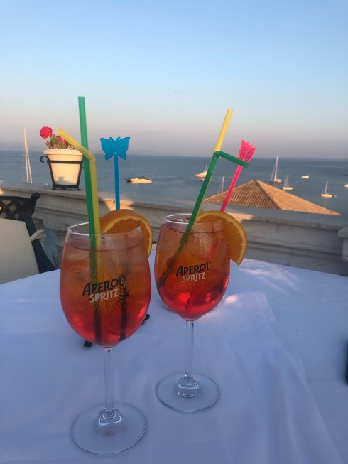

IFFLEY VILLAGE C.C.
IVCC vs Y.E. TH.
DATE: Sunday 30 June 2019
VENUE: A
FORMAT: Twenty20
RESULT: Lost by 1 wicket
IVCC BATTING
| # | BATSMAN | RUNS | HOW OUT |
|---|---|---|---|
| 1 | F.W.A. Cable-Alexander | 2 | Bowled |
| 2 | D.J. Watkins | 1 | Bowled |
| 3 | W.V.P. Taylor | 1 | Run out |
| 4 | S. Conway | 16 | Caught |
| 5 | A. Winter | 28 | Caught |
| 6 | A.W. Smith | 11 | Bowled |
| 7 | T. Morton | 8 | Bowled |
| 8 | A.J. Troth | 20 | Bowled |
| 9 | T.M. Ellis | 8 | Bowled |
| 10 | G.D. Ellis | 3* | Not out |
IVCC TOTAL: 117 for 9 (18.2 overs)
IVCC BOWLING
| BOWLER | OVERS | MAIDENS | RUNS | WICKETS |
|---|---|---|---|---|
| G.D. Ellis | 4.0 | 0 | 17 | 1 |
| T.M. Ellis | 4.0 | 0 | 14 | 2 |
| A. Winter | 4.0 | 0 | 15 | 1 |
| A.J. Troth | 2.5 | 0 | 40 | 1 |
| T. Morton | 3.0 | 0 | 18 | 2 |
| A.W. Smith | 1.0 | 0 | 6 | 0 |
Y.E. TH. TOTAL: 118 for 7 (18.5 overs)
MATCH REPORT
Continued from part 1 Following a heavy defeat on Saturday, on Sunday morning the tourists dragged our hungover, sore bodies out of bed and onto the cricket pitch in Corfu Town for Sunday’s game. The 10.30am start did little for the mental and physical states of the Iffley boys, but we were hugely grateful when opponents Y.E. TH. forewent the toss and invited us to choose whether to bat or bowl first. Someone yelled “BAT!” faster than a rat up a drainpipe, and Ferg and Dan strapped on their pads to go out into the blistering morning heat. Today’s game was a T20 affair, again played on an artificial strip, this one in much worse condition, with large tears in the top surface at both popping creases. The ground in Corfu Town is remarkably located in the middle of a UNESCO World Heritage site, overlooked by a Byzantine fortress and lined by cafes and trees on one side. The other three boundaries were lined with parked cars, with one of the square boundaries so short that it could be cleared by the cricketing equivalent of thumbing in a softy. Due to the close proximity of cars and people, the game was played with soft rubber balls which had to be periodically replaced as they fell apart. The tourists made a pretty miserable start; with both openers castled and number 3 Will run out, the score read 11 for 3 after 4 overs. The recovery job fell to Sam and Adam, with the Aussie continuing his clean ball-striking from Saturday in slapping a few pulls to the square boundaries. Adam had meanwhile heeded his skipper’s advice about taking the singles and was trying to run absolutely everything and somehow getting away with it. Sam’s innings ended when he nicked off to the keeper, bringing Bill to the crease. The skipper had looked good the previous day, and soon had the crowd cooing when he smashed a full toss into the awnings of the esplanade cafes. Sadly for him, he tried to repeat the shot on the next ball and was cleaned up. Adam was then joined by Fidel, who initially looked to be continuing from where he left off on Saturday, but he too saw his stumps re-arranged before too long. Alex, another of the form batsman, joined Adam, and the two built a good partnership with plenty of good running between the wickets. With the soft ball and ragged outfield, boundaries were hard to come by, but Adam did manage to launch a big six onto the road before he was caught at mid on as the innings drew towards its conclusion. Amongst the clatter of stumps, the tourists on the boundary were treated to the sight of a hungover Ferg suffering from a hilarious sat-nav malfunction and attempting to do square leg umpire duties from extra cover. There was time for Tim Ellis to play a brief cameo (featuring a rather rare one-bounce six), and the innings was over with 10 balls to spare when Alex had his off-stump knocked out by a perfect yorker, leaving last man Garr stranded 97 runs short of a deserved hundred. Garr opened the bowling from the Marina end, and in what we think may be an IVCC first, took a wicket with the first ball of the innings, with the young opener trying to smear a length ball to cow corner and missing it in spectacular fashion. Ellis Jr started from the other end, and was rewarded for a tidy spell with two wickets, caught by Ferg’s gut at mid-off, and by keeper Bill behind the stumps. Bill also dropped a sharp chance off Tim before handing over the gloves to Garr, who had completed a tidy spell of 1-17. Garr promptly dropped another chance off his brother in the very next over. The hosts’ most productive partnership was now at the crease, featuring their captain, the Melbourne-born Alex, who was particularly effective at launching his namesake Troth into the car park on the short boundary. The Catford Bumrah was bowling “fast leg spin” from the other end, and the Y.E. TH. captain was pole-axed several times as he swatted beamers away to square leg. Adam’s approach to field placing was bemusing to most of the team, with fielders in bizarre positions and Bill asked to go “five yards closer” when he was already about six yards from the batsman. The idiosyncratic approach was rewarded however when the dangerous Alex top-edged an attempted pull shot into the grateful hands of Fidel at short fine-leg. Fidel himself was also into the attack by this point, and delivered a splendid spell of accurate bowling, rewarded with two wickets, one caught off a top edge by Garr, and the other bowled. Wickets were now tumbling at regular intervals, but the home side had been scoring quickly enough that the game was still very much in the balance. Around the 12 over mark, the heat and the hangovers started to take their toll on the Village fielding, and O. V. Erthrows quickly made a claim for the home side’s star player. Troth returned to the attack from the other end and bowled a much better second spell, dismissing the number 8 via an inside edge through to Garr behind the stumps. With the hosts only having 9 players, IVCC now needed to take one more wicket to win the game, but the target was less than 20 runs away. The last pair ran hard and managed to squeeze their way home in the penultimate over. The tourists left the field with justifiably harsh words from a stroppy skipper regarding their fielding performance ringing in our ears: this was a game we should have won.

